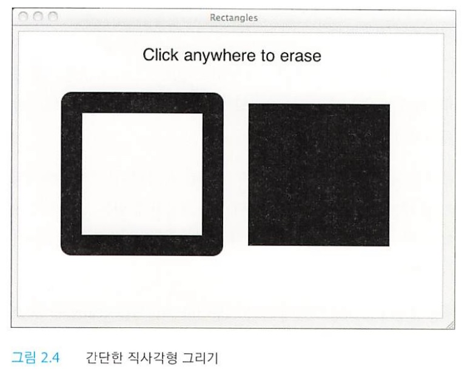

직사각형 그리기
캔버스 API에서는 직사각형과 관련된 메서드로 직사각형을 지우는 메서드, 그리는 메서드, 칠하는 메서드 등 세 가지 메서드를 제공한다.
- clearRect(double x, double y, double w, double h)
- strokeRect(double x, double y, double w, double h)
- fillRect(double x, double y, double w, double h)
[그림 2.4]에서는 위에서 언급한 세가지 메서드를 모두 사용한 간단한 애플리케이션을 보여주고 있다.

위 애플리케이션에서는 strokeRect() 메서드를 사용해 왼쪽에 직사각형을 그리고 fillRect() 메서드를 사용해 오른쪽에 있는 직사각형의 내부를 칠하고 있다.
그리고 마우스로 캔버스 내부의 한 곳을 선택하면, 애플리케이션에서는 clearRect() 메서드를 사용해 캔버스 전체를 지울 것이다.
strokeRect() 메서드는 모소리가 각진 직사각형을 그린다.
하지만 이 애플리케이션에서는 콘텍스트의 lineJoin 속성을 round로 설정했기 때문에 모서리가 둥글다.
이 내용은 lineJoin 속성으로 두 개의 선이 만나는 지점을 표현하는 방법을 자세히 다룬 2.8.7절(lineCap과 lineJoin)을 참고하자.
그리고 strokeRect() 메서드에서는 lineJoin 속성 이외에도 선의 두께(픽셀)를 명시한 lineWidth 속성을 사용할 수 있다.
다음은 clearRect() 메서드, strokeRect() 메서드, fillRect() 메서드에 대한 소개다.
- clearRect(double x, double y, double w, double h)
-
특정 직사각형과 현재 클리핑 영역이 교차하는 곳에 있는 모든 픽셀을 지운다.
클리핑 영역은 캔버스 크기와 같으므로 클리핑 영역을 변경하지 않으면, 메서드의 인수에 명시된 픽셀만큼 지우게 된다.
픽셀을 지우는 것은 색상을 완전히 투명하게 되돌린다는 의미다.
따라서 픽셀을 지워 캔버스의 배경을 비치게 할 수 있다.
- strokeRect(double x, double y, double w, double h)
-
다음 속성을 사용해 다양한 직사각형을 그릴 수 있다.
- strokeStyle
- lineWidth
- lineJoin
- miterLimit
너비나 높이를 0으로 설정한다면 strokeRect() 메서드에서는 수평선이나 수직선을 그릴 것이다.
그리고 너비와 높이를 모두 0으로 설정하면, strokeRect() 메서드에서는 어떤 작업도 하지 않는다.
- fillRect(double x, double y, double w, double h)
-
fillStyle 속성에 따라 내부를 채운 직사각형을 그린다.
너비나 높이를 0으로 설정하면 fillRect() 메서드에서는 어떠한 작업도 하지 않으니 참고하도록 하자.
- 모서리가 둥근 직사각형
-
위에서 언급한 예제에서는 lineJoin 속성을 사용해 모서리가 둥근 직사각형을 그리고 있다.
캔버스 명세서에서는 이렇게 둥근 모서리를 그리는 절차를 자세히 설명하고 있으므로 여러분이 창작하여 코딩할 필요가 없다.
물론 둥근 모서리의 반경 등과 같이 둥근 모서리의 속성을 제어하려면 모서리를 직접 그려야 할 것이다.
이와 관련된 자세한 내용은 2.9.3절(arcTo() 메서드)을 참고하자.